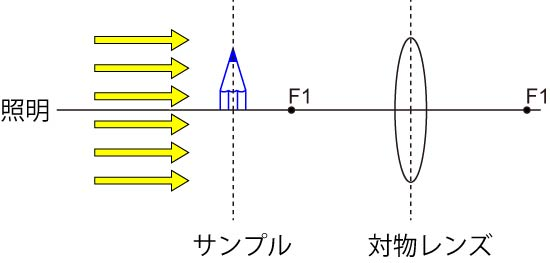
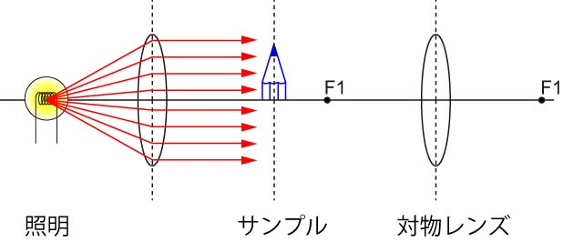

さて，ケーラー照明の最大の目的は， 試料にむらなく均一に照明を与える というものです． つまり，こんな感じに．

平行に光を照射すればいいのですね． 光源は一般的には点に近い（１点からではないですが）ものが多いですね，ハロゲン光，アーク光，など． １点から発せられた光を平行光に変える．．．． まさしくレンズの役割ですね．

えらい単純ですね．．．．なんだケーラー照明ってそんなものか．．．． と思ってはいけません． 次に，そのすばらしい手法を説明しましょう．